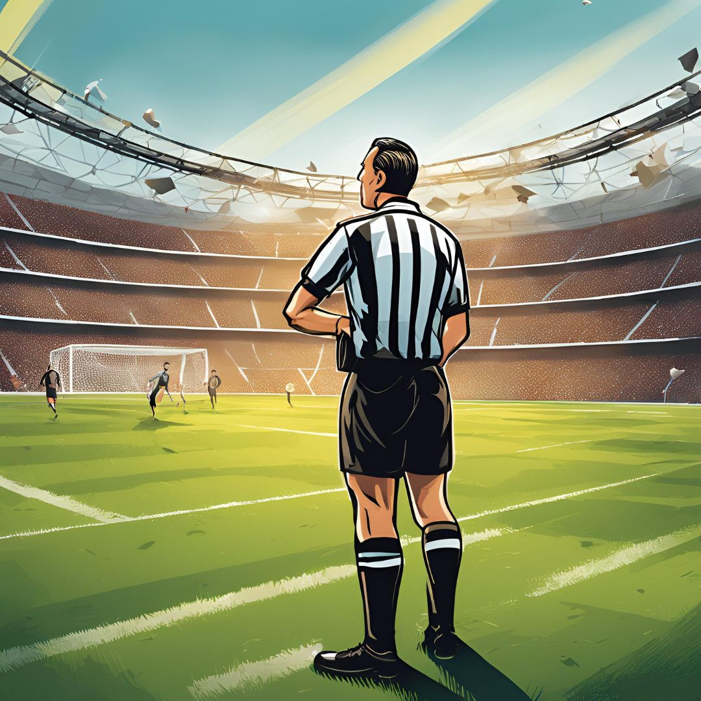

Previsioni Champions League: com’è andata?
Una valutazione degli errori

Com’è andata?
Ieri ho diffuso in un post le previsioni per l’ultima giornata di Champions League, basandomi sulle quotazioni dei bookmakers. Oggi vogliamo controllare com’è andata. Ci sono state previsioni centrate (ad es. Inter - Monaco, Manchester City - Brugge) e altre che invece non si sono avverate (Milan - Dinamo Zagabria).
Le previsioni principali
Anzitutto, facciamo il punto sulle affermazioni fatte in TV o nel mio post.
- Previsione corretta. L’Inter è passata direttamente agli ottavi di finale, classificandosi tra le prime quattro posizioni, come previsto.
- Previsione errata. Il Milan non è passato agli ottavi, nonostante avesse l’82% di probabilità di farlo.
- Previsione corretta. L’Atalanta è stata effettivamente in bilico (è arrivata 9ª) ed è infine andata ai playoff, come previsto.
- Previsione corretta. La Juventus è andata ai playoff, come ampiamente previsto. Questa però era davvero facile da indovinare.
- Previsione corretta. Il Manchester City è andato ai playoff, come previsto.
Entriamo ora maggiormente nel dettaglio delle singole previsioni.
L’errore commesso dai bookmakers
Quando facciamo una “previsione secca”, cioè indichiamo se l’esito sarà 1, X o 2, ci basiamo sulle probabilità di ciascun risultato. Pertanto, per la i-esima partita la probabilità di indovinare sarà:
\text{Probabilità di indovinare l'}i\text{-esima previsione} = \hat{p}_i = \max \{p_{i1}, p_{iX}, p_{i2}\},
dove p_{i1}, p_{iX}, p_{i2} sono le probabilità di vittoria, pareggio e sconfitta. Viceversa, la probabilità di sbagliare sarà:
\text{Probabilità di sbagliare l'}i\text{-esima previsione} = 1 - \hat{p}_i.
Alcuni esempi
Ad esempio, l’Aston Villa era favorito contro il Celtic FC (ed in effetti ha vinto 4-2) perché il 62% rappresentava una probabilità più alta rispetto al 22% (pareggio) e al 16% (sconfitta).
| Squadra 1 | Squadra 2 | 1 | X | 2 | Probabilità di indovinare (\hat{p}_i) | Probabilità di sbagliare (1 - \hat{p}_i) |
|---|---|---|---|---|---|---|
| Aston Villa | Celtic FC | 0.62 | 0.22 | 0.16 | 0.62 | 0.38 |
| Barcellona | Atalanta | 0.55 | 0.23 | 0.22 | 0.55 | 0.45 |
| Dinamo Zagabria | Milan | 0.17 | 0.21 | 0.62 | 0.62 | 0.38 |
Le nostre aspettative sugli errori commessi
Su 18 partite, quindi, ci aspettiamo che il numero medio di errori commessi sia pari alla somma delle probabilità di sbagliare, vale a dire circa:
\text{Numero medio di errori commessi} = \sum_{i=1}^{18}(1 - \hat{p}_i) = 0.38 + 0.45 + 0.48 + \cdots = 7.17.
Quanti errori sono stati effettivamente commessi?
Nella prossima tabella, chiamata matrice di confusione, abbiamo confrontato le previsioni dei bookmakers con i risultati effettivi.
| 1 (Reale) | X (Reale) | 2 (Reale) | |
|---|---|---|---|
| 1 (Previsto) | 7 | 2 | 1 |
| X (Previsto) | 0 | 0 | 1 |
| 2 (Previsto) | 3 | 0 | 4 |
La previsione della classifica
Prevedere una singola partita è difficile, perché ci sono molti fattori imprevedibili. Tuttavia, prevedere la classifica finale è un compito un po’ più semplice, anche perchè le squadre non partivano dallo stesso punteggio.
Anche in questo caso, ci sono buone notizie: ci possiamo quindi ritenere ragionevolmente soddisfatti delle nostre previsioni.
Nel seguito ho rappresentato graficamente la classifica alla settima giornata, la previsione ottenuta con il metodo Monte Carlo e, infine, la graduatoria finale.